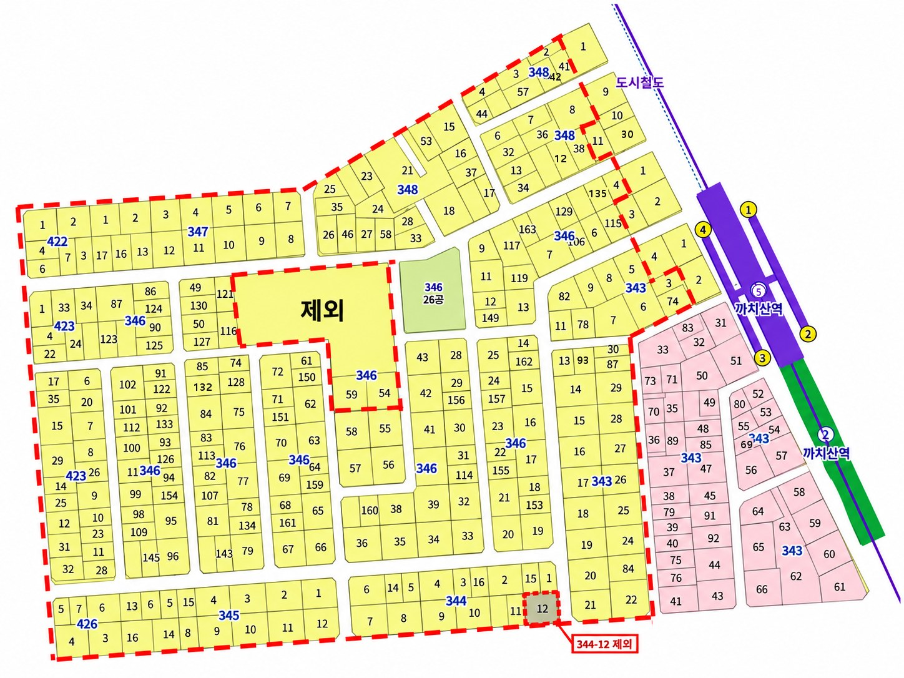

전체 동의율–
동의 / 소유자–
30%까지–
구역도

번지를 누르면 그 번지로 확대됩니다. 두 손가락으로 확대, 끌어서 이동
- 자료 없음
- 10% 미만
- 10~30%
- 30% 이상
이번 주 우선순위 동의율 낮은 순
동의율 = 동의서 낸 소유자 ÷ 그 번지 전체 소유자입니다. 소유자 수가 아직 없는 번지는 ‘자료 없음’으로 나옵니다. 소유자가 10명 미만인 번지는 누가 냈는지 짐작될 수 있어 비율을 가립니다. 이 화면에는 개인정보(성명·연락처·집별 동의 여부)를 넣지 않습니다.